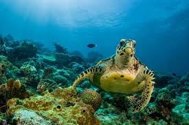

Kura-kura adalah hewan yang dikenal dengan cangkangnya yang keras dan tubuhnya yang lambat. Cangkang kura-kura berfungsi untuk melindungi tubuhnya dari predator dan bahaya lainnya. Kura-kura bisa hidup di darat, air tawar, maupun laut tergantung jenisnya.
Kura-kura dapat ditemukan di berbagai belahan dunia. Mereka hidup di hutan, padang rumput, sungai, dan laut. Kura-kura darat biasanya tinggal di area kering dengan banyak tumbuhan, sedangkan kura-kura laut bermigrasi ribuan kilometer melintasi samudera. Habitat kura-kura sangat beragam tergantung kebutuhan makan dan berkembang biaknya.
Ada banyak spesies kura-kura dengan ukuran dan bentuk yang berbeda. Contohnya kura-kura Galapagos yang sangat besar dan dapat hidup lebih dari 100 tahun. Ada juga penyu hijau yang terkenal sebagai perenang handal di lautan. Setiap jenis kura-kura memiliki ciri khas unik, mulai dari warna cangkang, pola makan, hingga perilaku bertahan hidupnya.